IT Support (555) 677-1400
Need help? Here's where you can find answers to some of your questions.
I want to...
Q: How do I add a new schedule path or delete an existing path?
Use the "Add Path" or delete buttons to add or remove paths.
To add a path, click on the "Add Path" button.
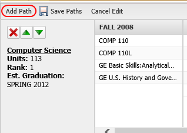
You will then need to select a major and a starting semester to
begin your plan.
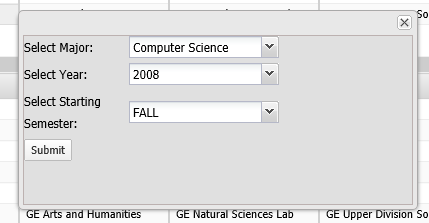
To delete a path, select the red "X" in the path row to delete.
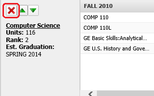
Q: How do I reorganize my paths?
Use the green arrows to move a path higher or lower in rank.
Click the up arrow to increase the rank. The down arrow will decrease the rank.
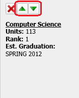
Q: How do I add or delete a class?
To add a class, right click on any white area within the semester to add a class.
A button with "Add class" will appear. Click the button and select a class from the dropdown box.
Click "Submit" to finish adding the class.
Right click in the white space.
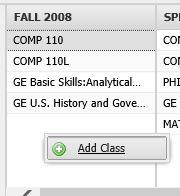
Select class from dropdown box and click "Submit".
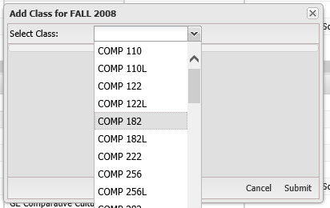
To delete a class, right click on the class to delete and click the "Delete Class" button.
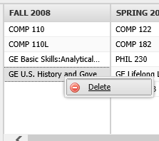
Q: How do I make adjustments to my
existing path?
You can click and drag classes around to fit your desired schedule.
Click a class, hold, and drag the class into another semester.
Then release the class in that semester to place it there.
Click and hold on the class to move.
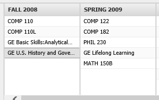
Drag the class to the desired semester. You will see a green line letting you known the order the class will go in.
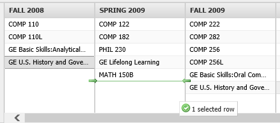
Release the class in the new column.
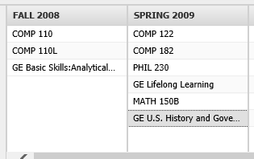
Q: How do I cancel my changes to a path?
Click the "Cancel Edit" button to revert the paths to the last saved version.
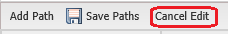
Q: I need more help.
Contact IT Support at (555) 677-1400